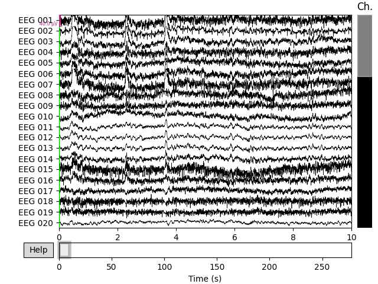
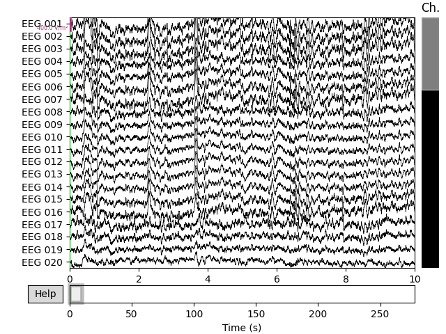
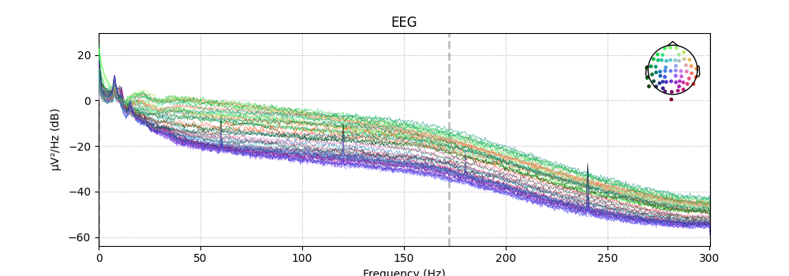
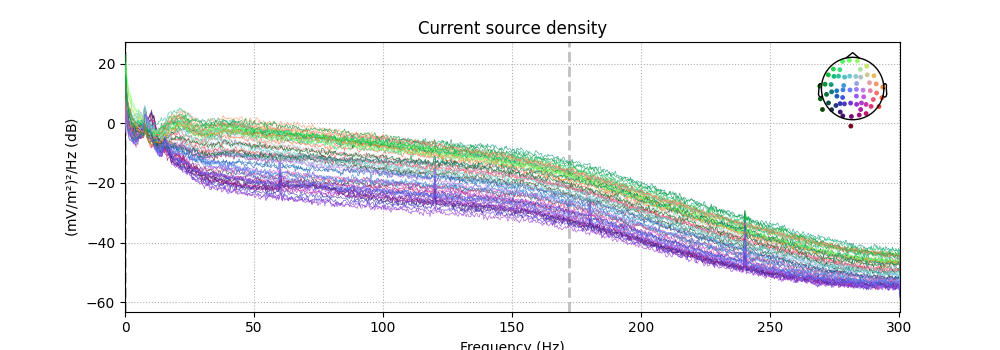
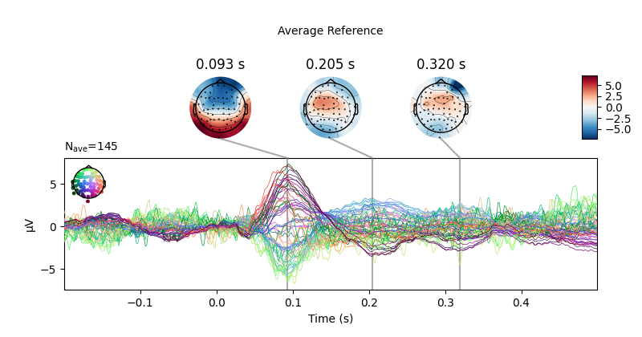
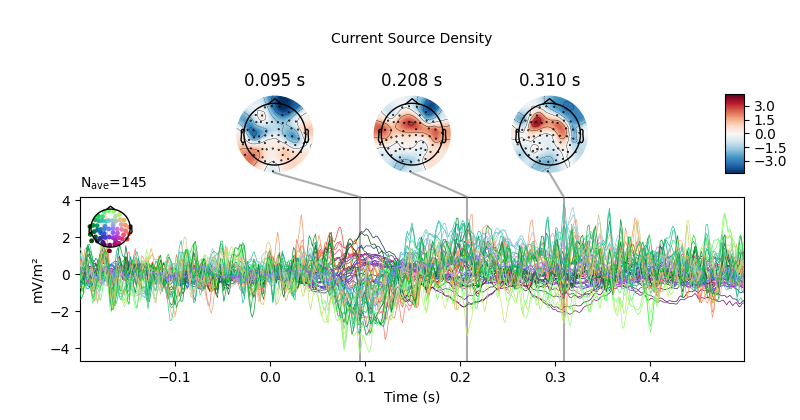

Note
Click here to download the full example code
Transform EEG data using current source density (CSD)¶
This script shows an example of how to use CSD 3412. CSD takes the spatial Laplacian of the sensor signal (derivative in both x and y). It does what a planar gradiometer does in MEG. Computing these spatial derivatives reduces point spread. CSD transformed data have a sharper or more distinct topography, reducing the negative impact of volume conduction.
# Authors: Alex Rockhill <aprockhill@mailbox.org>
#
# License: BSD (3-clause)
import numpy as np
import matplotlib.pyplot as plt
import mne
from mne.datasets import sample
print(__doc__)
data_path = sample.data_path()
Load sample subject data
raw = mne.io.read_raw_fif(data_path + '/MEG/sample/sample_audvis_raw.fif')
raw = raw.pick_types(meg=False, eeg=True, eog=True, ecg=True, stim=True,
exclude=raw.info['bads']).load_data()
events = mne.find_events(raw)
raw.set_eeg_reference(projection=True).apply_proj()
Out:
Opening raw data file /home/circleci/mne_data/MNE-sample-data/MEG/sample/sample_audvis_raw.fif...
Read a total of 3 projection items:
PCA-v1 (1 x 102) idle
PCA-v2 (1 x 102) idle
PCA-v3 (1 x 102) idle
Range : 25800 ... 192599 = 42.956 ... 320.670 secs
Ready.
Removing projector <Projection | PCA-v1, active : False, n_channels : 102>
Removing projector <Projection | PCA-v2, active : False, n_channels : 102>
Removing projector <Projection | PCA-v3, active : False, n_channels : 102>
Reading 0 ... 166799 = 0.000 ... 277.714 secs...
320 events found
Event IDs: [ 1 2 3 4 5 32]
Adding average EEG reference projection.
1 projection items deactivated
Average reference projection was added, but has not been applied yet. Use the apply_proj method to apply it.
Created an SSP operator (subspace dimension = 1)
1 projection items activated
SSP projectors applied...
Plot the raw data and CSD-transformed raw data:
- 
- 
Out:
Fitted sphere radius: 91.0 mm
Origin head coordinates: -4.1 16.0 51.7 mm
Origin device coordinates: 1.4 17.8 -10.3 mm
Also look at the power spectral densities:
- 
- 
Out:
Effective window size : 3.410 (s)
Effective window size : 3.410 (s)
CSD can also be computed on Evoked (averaged) data. Here we epoch and average the data so we can demonstrate that.
Out:
Not setting metadata
Not setting metadata
320 matching events found
Setting baseline interval to [-0.19979521315838786, 0.0] sec
Applying baseline correction (mode: mean)
Created an SSP operator (subspace dimension = 1)
1 projection items activated
Loading data for 320 events and 421 original time points ...
0 bad epochs dropped
First let’s look at how CSD affects scalp topography:
times = np.array([-0.1, 0., 0.05, 0.1, 0.15])
evoked_csd = mne.preprocessing.compute_current_source_density(evoked)
evoked.plot_joint(title='Average Reference', show=False)
evoked_csd.plot_joint(title='Current Source Density')
- 
- 
Out:
Fitted sphere radius: 91.0 mm
Origin head coordinates: -4.1 16.0 51.7 mm
Origin device coordinates: 1.4 17.8 -10.3 mm
Projections have already been applied. Setting proj attribute to True.
Projections have already been applied. Setting proj attribute to True.
CSD has parameters stiffness and lambda2 affecting smoothing and
spline flexibility, respectively. Let’s see how they affect the solution:
fig, ax = plt.subplots(4, 4)
fig.subplots_adjust(hspace=0.5)
fig.set_size_inches(10, 10)
for i, lambda2 in enumerate([0, 1e-7, 1e-5, 1e-3]):
for j, m in enumerate([5, 4, 3, 2]):
this_evoked_csd = mne.preprocessing.compute_current_source_density(
evoked, stiffness=m, lambda2=lambda2)
this_evoked_csd.plot_topomap(
0.1, axes=ax[i, j], outlines='skirt', contours=4, time_unit='s',
colorbar=False, show=False)
ax[i, j].set_title('stiffness=%i\nλ²=%s' % (m, lambda2))
Out:
Fitted sphere radius: 91.0 mm
Origin head coordinates: -4.1 16.0 51.7 mm
Origin device coordinates: 1.4 17.8 -10.3 mm
Fitted sphere radius: 91.0 mm
Origin head coordinates: -4.1 16.0 51.7 mm
Origin device coordinates: 1.4 17.8 -10.3 mm
Fitted sphere radius: 91.0 mm
Origin head coordinates: -4.1 16.0 51.7 mm
Origin device coordinates: 1.4 17.8 -10.3 mm
Fitted sphere radius: 91.0 mm
Origin head coordinates: -4.1 16.0 51.7 mm
Origin device coordinates: 1.4 17.8 -10.3 mm
Fitted sphere radius: 91.0 mm
Origin head coordinates: -4.1 16.0 51.7 mm
Origin device coordinates: 1.4 17.8 -10.3 mm
Fitted sphere radius: 91.0 mm
Origin head coordinates: -4.1 16.0 51.7 mm
Origin device coordinates: 1.4 17.8 -10.3 mm
Fitted sphere radius: 91.0 mm
Origin head coordinates: -4.1 16.0 51.7 mm
Origin device coordinates: 1.4 17.8 -10.3 mm
Fitted sphere radius: 91.0 mm
Origin head coordinates: -4.1 16.0 51.7 mm
Origin device coordinates: 1.4 17.8 -10.3 mm
Fitted sphere radius: 91.0 mm
Origin head coordinates: -4.1 16.0 51.7 mm
Origin device coordinates: 1.4 17.8 -10.3 mm
Fitted sphere radius: 91.0 mm
Origin head coordinates: -4.1 16.0 51.7 mm
Origin device coordinates: 1.4 17.8 -10.3 mm
Fitted sphere radius: 91.0 mm
Origin head coordinates: -4.1 16.0 51.7 mm
Origin device coordinates: 1.4 17.8 -10.3 mm
Fitted sphere radius: 91.0 mm
Origin head coordinates: -4.1 16.0 51.7 mm
Origin device coordinates: 1.4 17.8 -10.3 mm
Fitted sphere radius: 91.0 mm
Origin head coordinates: -4.1 16.0 51.7 mm
Origin device coordinates: 1.4 17.8 -10.3 mm
Fitted sphere radius: 91.0 mm
Origin head coordinates: -4.1 16.0 51.7 mm
Origin device coordinates: 1.4 17.8 -10.3 mm
Fitted sphere radius: 91.0 mm
Origin head coordinates: -4.1 16.0 51.7 mm
Origin device coordinates: 1.4 17.8 -10.3 mm
Fitted sphere radius: 91.0 mm
Origin head coordinates: -4.1 16.0 51.7 mm
Origin device coordinates: 1.4 17.8 -10.3 mm
References¶
- 1
Mike X. Cohen. Analyzing Neural Time Series Data: Theory and Practice. MIT Press, 2014.
- 2
Jürgen Kayser and Craig E. Tenke. On the benefits of using surface Laplacian (Current Source Density) methodology in electrophysiology. International journal of psychophysiology : official journal of the International Organization of Psychophysiology, 97(3):171–173, September 2015. doi:10.1016/j.ijpsycho.2015.06.001.
- 3
F. Perrin, O. Bertrand, and J. Pernier. Scalp Current Density Mapping: Value and Estimation from Potential Data. IEEE Transactions on Biomedical Engineering, BME-34(4):283–288, April 1987. doi:10.1109/TBME.1987.326089.
- 4
François M. Perrin, Jacques Pernier, Olivier M. Bertrand, and Jean Franćois Echallier. Spherical splines for scalp potential and current density mapping. Electroencephalography and Clinical Neurophysiology, 72(2):184–187, 1989. doi:10.1016/0013-4694(89)90180-6.
Total running time of the script: ( 0 minutes 17.879 seconds)
Estimated memory usage: 301 MB